關於世界地球日
世界地球日即每年4月22日，是一項世界性的環境保護活動，自1970年4月22日開始，由美國參議員有鑑於當時美國環境問題而發起，引起200萬美國民眾上街訴求一個健康、永續的生活環境。在這天，不同國籍的人們各自以不同的方式實踐環境保護與關懷地球生態的概念。
再生利用
選購再生與
回收資源製造的產品
回收資源製造的產品
環保素材
使用環保素材製造的商品
可自然分解於土壤的材質
可自然分解於土壤的材質
天使理念
企業營利與社會責任之間
取得平衡的天使企業
取得平衡的天使企業

有備而來
使用環保餐具與購物袋
減少使用一次性商品
減少使用一次性商品
再生利用
『資源有限，慾望無窮』，將有限的資源再生利用，使能量生生不息，有時候你不需要的東西，但對於需要的人來說可說是『珍寶』喔！
ARKY 香草與魚
是一套居家自組的生態循環裝置，當餵食飼料的魚消化腹中的食物後，產生排泄物會被水中既有的消化菌給分解成分子，透過抽水馬達將這些帶有豐富養分的水分子抽往上層發泡煉石的泥土層供為植物的水分與營養來源，植物吸收後多餘的水份在發泡煉石裡會被慢慢過濾，變回原來乾淨的水質流下回歸給魚使用，此即為一個完整的魚草共生循環。也滿足了現代人忙於工作，又想要擁有最輕鬆最可愛的小生態。
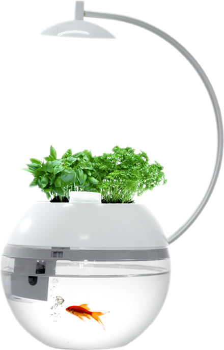
Targus 16吋
綠色環保後背包
綠色環保後背包
以環保意識為設計理念的EcoSmart™ 綠色環保包是以回收保特瓶來製作，無PVC毒素疑慮還有可回收的塑膠組件。為保護筆記型電腦與平板電腦而設計，可存放於具備緩衝材質保護的隔間內，寬闊的拉鍊隔間與口袋可儲存大的文件，資料夾或雜誌。
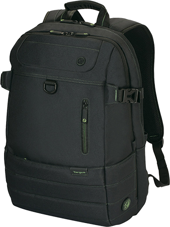
環保素材
選擇最友善環境的天然材質，表面所使用的天然無毒塗料，來自於天然的材質所製造出來的成品，皆能再回歸於土壤自然分解。
from soil to soil落實與自然共處，回歸自然，與自然和平共存。
from soil to soil落實與自然共處，回歸自然，與自然和平共存。
路易王子 樂活玉米咖啡杯
原料主要是來自於天然穀物的聚合物，
如玉米、薯類及南瓜等分解後對環境不會造成汙染。
如玉米、薯類及南瓜等分解後對環境不會造成汙染。

Paper Shoot 紙可拍
純白自由DIY體驗款(內含8G記憶卡)
純白自由DIY體驗款(內含8G記憶卡)
紙可拍是目前市場上唯一銷售的數位紙相機，「環保紙外殼」是最引以為傲的特色，不只具有創意的印刷，紙外殼可環境分解，讓地球永續經營。
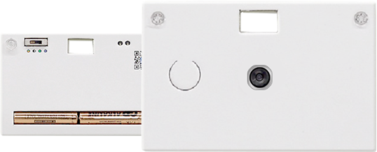
Bambu
竹風迷你小圓碗歡聚4件組
竹風迷你小圓碗歡聚4件組
防水處理，輕巧堅固、可以盛裝您日常生活的冷熱食物。材質可自然分解，對環境友善。
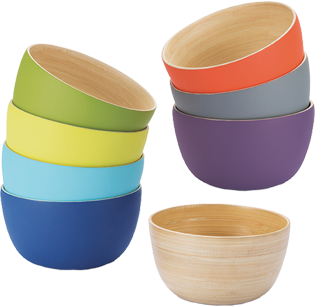
Man&Wood
iPhone
天然木紋保護殼
iPhone
天然木紋保護殼
每一塊紋路都是自然生成獨一無二的天然木紋，將加工降到最少，呈現天然的樣貌。
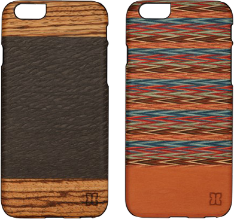
天使理念
企業家們『取之於社會，用之於社會』，在營利與社會責任之間取的平衡。不僅落實節能減碳，再生利用理念，並將盈餘回饋給社會上弱勢的族群，我們稱為『天使企業』。
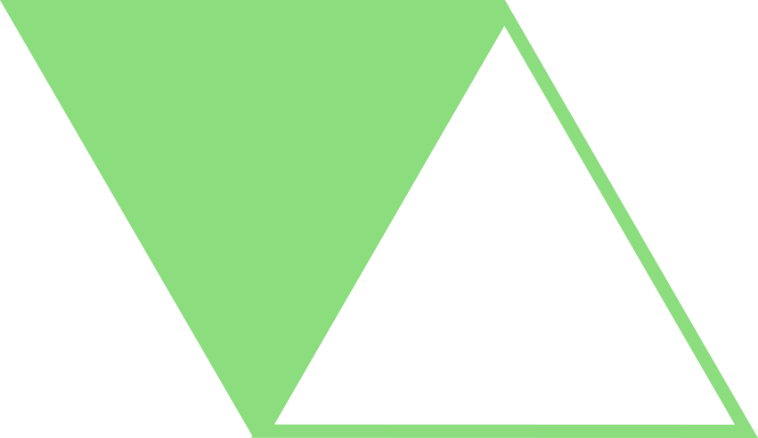
Blue Q 郵差包
Astra 復古風情
Astra 復古風情
使用回收米袋再製，95% 環保回收材質編織而成，當您購買商品，Blue Q 將捐贈1% 營業額給大自然保護協會。讓你 Shopping 時隨心所欲，同時還能環保愛地球。
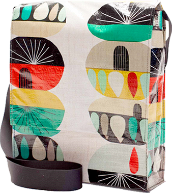
TOMS
夏日新款休閒鞋 熱帶花朵
賣1→捐1 串起貧富兩端
夏日新款休閒鞋 熱帶花朵
賣1→捐1 串起貧富兩端
TOMS創辦人布雷克在商業與公益中找到平衡，8年來為了打造更好明天而創造「明日之鞋」，提倡「買一雙、捐一雙」(one for one)的銷售模式，在全球送出1300萬雙鞋助貧童。讓消費者透過購買自己的鞋。也改變另一個人的生命。
未來，TOMS鞋也將在肯亞、海地等地廣社工廠，增加當地就業機會，每製造的兩雙鞋就有一雙會送給當地的貧童，也會創造更多 One for One 的商品模式。
未來，TOMS鞋也將在肯亞、海地等地廣社工廠，增加當地就業機會，每製造的兩雙鞋就有一雙會送給當地的貧童，也會創造更多 One for One 的商品模式。
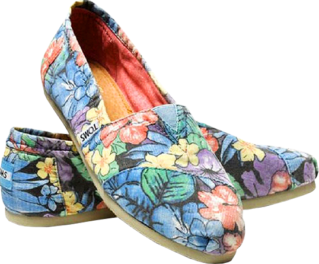
有備而來
使用自備餐具、環保購物袋、節能省電，愛護地球最簡單的方式!
愛地球，你一定可以!
愛地球，你一定可以!
Husk's ware 天然無毒環保兒童餐具
稻穀原是農作物的廢料，再生處理製成可被大自然分解不造成環境負擔的可愛造型餐具，最重要的是安全無毒！
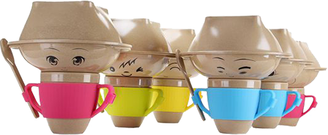
4M 太陽能機器人
讓教育不再限於紙上談兵！操作式教育，用示範實驗方式進行，讓孩子透過觀察和研究吸收多元的知識，以身體力行的方式讓孩子從感官學習，發展記憶力和想像力。
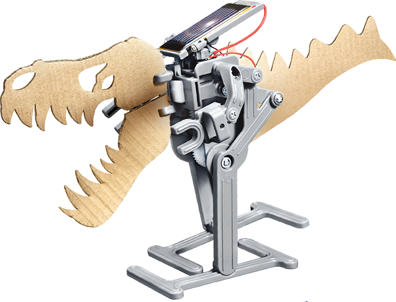
CHIMEI奇美
第二代LED護眼檯燈
第二代LED護眼檯燈
LED是綠色照明的理想光源，燈源體為膠質體，不易破碎，不會產生汞、鉛等破壞環境的有害物質。效能轉換率非常高，具有節能、壽命長、免維護等優點。
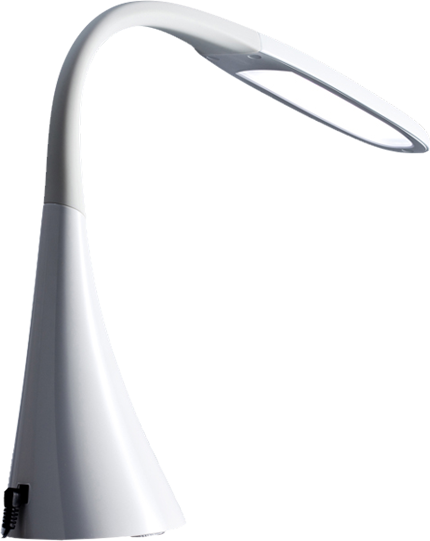
日本 Prairie Dog
設計包
設計包
由日本設計師及插畫家精心設計的隨身購物袋，容易折疊、收納快速，附有內袋並且包口可繫，肩背帶採雙層布料加強縫紉，環保耐用！
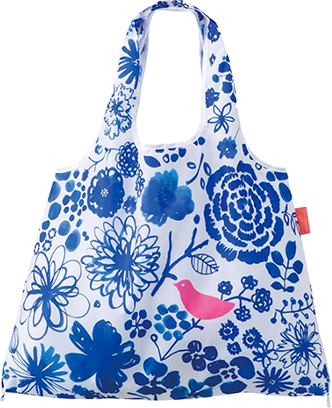